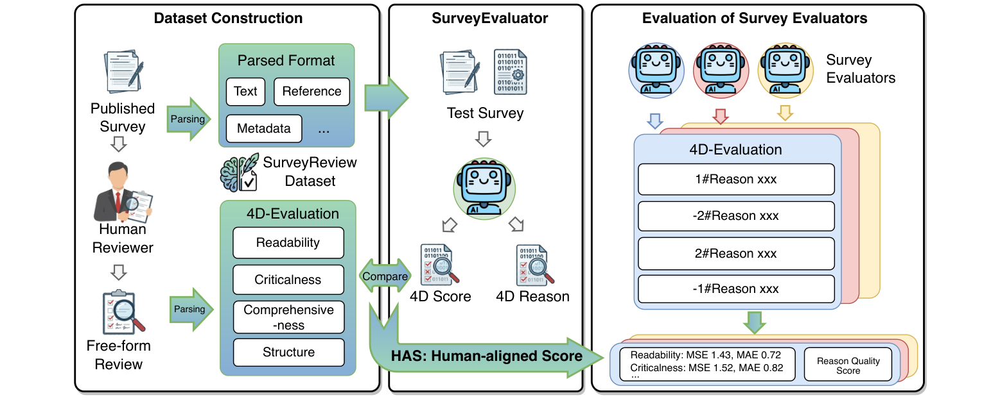

HAS
Human-aligned Score combines score alignment and reasoning quality into one overall benchmark metric. It rewards evaluators that predict reviewer scores accurately while also producing rationales consistent with human reviews.

SurveyReview is a reviewer-aligned benchmark for evaluating whether automatic survey evaluators make judgments that match human peer reviewers.
The rapid advancement of large language models has transformed survey writing from a months-long manual effort into an automated process. As generation scales, reliable evaluation becomes the bottleneck, and LLMs are increasingly used as survey evaluators. Existing approaches largely rely on off-the-shelf LLM-as-a-judge methods without systematic alignment to human reviewers.
SurveyReview addresses this gap with a reviewer-aligned, multi-dimensional benchmark and dataset for survey evaluation. It converts authentic peer-review comments into four-dimensional scores and supporting rationales, then evaluates automatic systems through score alignment and reasoning quality. The paper further develops SurveyAlign, a strong baseline evaluator based on Qwen3-32B with LoRA and knowledge augmentation.
Lower MSE/MAE is better. Higher HAS/RQS is better.
| Rank | Model | HAS ↑ | Read. | Crit. | Comp. | Stru. | Average | RQS ↑ | |||||
|---|---|---|---|---|---|---|---|---|---|---|---|---|---|
| MSE | MAE | MSE | MAE | MSE | MAE | MSE | MAE | MSE | MAE | ||||
| 1 | SurveyReviewer | 0.74 | 1.43 | 0.72 | 1.52 | 0.82 | 1.26 | 0.56 | 1.29 | 0.65 | 1.38 | 0.69 | 0.36 |
| 2 | GPT-5.2 | 0.68 | 2.13 | 1.07 | 1.97 | 0.97 | 2.04 | 1.08 | 2.98 | 1.47 | 2.28 | 1.15 | 0.42 |
| 3 | Claude-Opus-4.5 | 0.68 | 2.91 | 1.29 | 1.88 | 0.88 | 2.66 | 1.23 | 3.65 | 1.58 | 2.77 | 1.25 | 0.48 |
| 4 | Qwen3-32B | 0.61 | 3.05 | 1.45 | 3.24 | 1.51 | 3.22 | 1.54 | 3.35 | 1.53 | 3.21 | 1.51 | 0.36 |
| 5 | GLM-4.7 | 0.60 | 3.43 | 1.50 | 2.58 | 1.21 | 3.66 | 1.57 | 4.83 | 1.95 | 3.62 | 1.56 | 0.37 |
| 6 | gemini-3-pro | 0.58 | 3.84 | 1.52 | 2.25 | 1.00 | 3.91 | 1.49 | 5.76 | 2.11 | 3.94 | 1.53 | 0.29 |
| 7 | DeepSeek-v3.2 | 0.58 | 4.78 | 1.88 | 2.49 | 1.15 | 4.59 | 1.82 | 4.02 | 1.76 | 3.97 | 1.65 | 0.37 |
Human-aligned Score combines score alignment and reasoning quality into one overall benchmark metric. It rewards evaluators that predict reviewer scores accurately while also producing rationales consistent with human reviews.
Reason Quality Score measures semantic consistency between an evaluator's generated rationale and the reference rationale written from human peer-review comments.